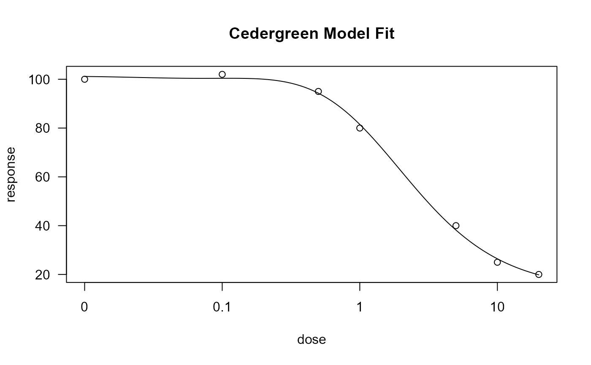

Provides the Cedergreen-Ritz-Streibig function, a five-parameter model
for describing dose-response curves that exhibit hormesis (a stimulatory or
beneficial effect at low doses). This function generates a model object suitable
for use with non-linear regression functions like drm.
A numeric vector of length 5 specifying any parameters to be held fixed
during the estimation. The order is c(b, c, d, e, f). Use NA for
parameters that should be estimated. The default is to estimate all parameters.
A character vector of length 5 providing names for the parameters.
The default is c("b", "c", "d", "e", "f").
A character string specifying the method for the self-starter function
to use for finding initial parameter values. Options are "loglinear",
"anke", "method3", and "normolle". This is only used if ssfct is NULL.
A custom self-starter function. If NULL (the default), a
self-starter is automatically generated by calling cedergreen.ssf
with the specified method, fixed, and alpha arguments.
A mandatory numeric value specifying the fixed shape parameter \(\alpha\). The function will stop if this is not provided.
An optional character string to name the function object.
An optional character string providing a descriptive text for the model.
A list of class mllogistic, containing the model function (fct),
the self-starter function (ssfct), parameter names (names), and other
components required for use with modeling functions like drm.
The Cedergreen-Ritz-Streibig model is defined by the following equation: $$f(x) = c + \frac{d - c + f \exp(-1/x^{\alpha})}{1 + \exp(b(\log(x) - \log(e)))}$$ The parameter \(f\) determines the size of the hormetic effect (stimulation). If \(f=0\), the model simplifies to the standard four-parameter log-logistic model. The parameter \(\alpha\) is a shape parameter that must be specified by the user.
drm for model fitting, and cedergreen.ssf for the
underlying self-starter function.
# \donttest{
# This example requires the 'drc' package to be installed.
if (requireNamespace("drc", quietly = TRUE)) {
library(drc)
# Sample data exhibiting a hormetic effect (initial stimulation)
dose <- c(0, 0.1, 0.5, 1, 5, 10, 20)
response <- c(100, 102, 95, 80, 40, 25, 20)
my_data <- data.frame(dose = dose, response = response)
# 1. Basic model fit, specifying the mandatory 'alpha' parameter
# The self-starter will find initial values for all 5 parameters.
model_fit <- drm(response ~ dose, data = my_data,
fct = cedergreen(alpha = 0.5))
summary(model_fit)
plot(model_fit, main = "Cedergreen Model Fit")
# 2. Model fit with a fixed lower limit (c = 20)
# The self-starter will now only find initial values for b, d, e, and f.
model_fit_fixed <- drm(response ~ dose, data = my_data,
fct = cedergreen(alpha = 0.5, fixed = c(NA, 20, NA, NA, NA)))
summary(model_fit_fixed)
}

#>
#> Model fitted: Cedergreen-Ritz-Streibig (4 parms)
#>
#> Parameter estimates:
#>
#> Estimate Std. Error t-value p-value
#> b:(Intercept) 1.48341 0.38199 3.8834 0.03025 *
#> d:(Intercept) 101.30396 2.57536 39.3358 3.615e-05 ***
#> e:(Intercept) 1.92574 1.62073 1.1882 0.32025
#> f:(Intercept) 10.35567 90.49771 0.1144 0.91613
#> ---
#> Signif. codes: 0 '***' 0.001 '**' 0.01 '*' 0.05 '.' 0.1 ' ' 1
#>
#> Residual standard error:
#>
#> 3.020728 (3 degrees of freedom)
# }